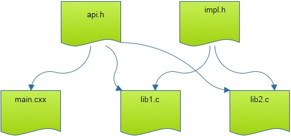
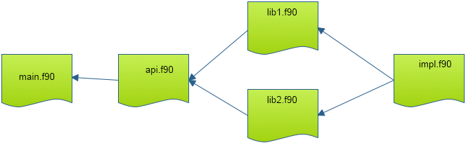

The Make utility helps you manage the building of projects: its main task is to facilitate rebuilding only those parts of a multi-file project that need to be recompiled or rebuilt. This can save lots of time, since it can replace a minutes-long full installation by a single file compilation. Make can also help maintaining multiple installations of a program on a single machine, for instance compiling a library with more than one compiler, or compiling a program in debug and optimized mode.
Makethere are variants with slightly different behavior, for instance on the various flavors of Unix such as HP-UX, AUX, IRIX. These days, it is advisable, no matter the platform, to use the GNU version of Make which has some very powerful extensions; it is available on all Unix platforms (on Linux it is the only available variant), and it is a de facto standard. The manual is available at http://www.gnu.org/software/make/manual/make.html , or you can read the book~ [OReilly-GnuMake] .
There are other build systems, most notably Scons and Bjam . We will not discuss those here. The examples in this tutorial will be for the C and Fortran languages, but Make can work with any language, and in fact with things like TeX that are not really a language at all; see section~ 24.6 .
crumb trail: > gnumake > A simple example
In this section you will see a simple example, just to give the flavor of Make
The files for this section can be found in the repository in the directory tutorials/make_tutorial_files .
crumb trail: > gnumake > A simple example > C
Make the following files:
File: tutorials/makefiles/1c/foo.c File: tutorials/makefiles/1c/bar.c File: tutorials/makefiles/1c/bar.h and a makefile: File: tutorials/makefiles/1c/Makefile
The makefile has a number of rules like
foo.o : foo.c <TAB>cc -c foo.cwhich have the general form
target : prerequisite(s) <TAB>rule(s)where the rule lines are indented by a TAB character.
A rule, such as above, states that a `target' file foo.o is made from a `prerequisite' foo.c , namely by executing the command \n{cc -c foo.c}. The precise definition of the rule is:
Probably the best way to interpret a rule is:
If you call make without any arguments, the first rule in the makefile is evaluated. You can execute other rules by explicitly invoking them, for instance make foo.o to compile a single file.
\practical{Call make .} {The above rules are applied: make without arguments tries to build the first target, fooprog . In order to build this, it needs the prerequisites foo.o and bar.o , which do not exist. However, there are rules for making them, which make recursively invokes. Hence you see two compilations, for foo.o and bar.o , and a link command for fooprog .} {Typos in the makefile or in file names can cause various errors. In particular, make sure you use tabs and not spaces for the rule lines. Unfortunately, debugging a makefile is not simple. Make 's error message will usually give you the line number in the make file where the error was detected.}
\practical{Do make clean , followed by mv foo.c boo.c and make again. Explain the error message. Restore the original file name.} { Make will complain that there is no rule to make foo.c . This error was caused when foo.c was a prerequisite for making foo.o , and was found not to exist. Make then went looking for a rule to make it and no rule for creating .c files exists.}{}
Now add a second argument to the function bar . This requires you to edit bar.c and bar.h : go ahead and make these edits. However, it also requires you to edit foo.c , but let us for now `forget' to do that. We will see how Make can help you find the resulting error.
\practical{Call make to recompile your program. Did it recompile foo.c ?}{Even through conceptually foo.c would need to be recompiled since it uses the bar function, Make did not do so because the makefile had no rule that forced it.}{}
In the makefile, change the line
foo.o : foo.cto
foo.o : foo.c bar.hwhich adds bar.h as a prerequisite for foo.o . This means that, in this case where foo.o already exists, Make will check that foo.o is not older than any of its prerequisites. Since bar.h has been edited, it is younger than foo.o , so foo.o needs to be reconstructed.
\practical{Confirm that the new makefile indeed causes foo.o to be recompiled if bar.h is changed. This compilation will now give an error, since you `forgot' to edit the use of the bar function.}{}{}
crumb trail: > gnumake > A simple example > Fortran
Make the following files:
File: tutorials/makefiles/1f/foomain.F File: tutorials/makefiles/1f/foomod.F and a makefile: File: tutorials/makefiles/1f/Makefile If you call make , the first rule in the makefile is executed. Do this, and explain what happens.
\practical{Call make .} {The above rules are applied: make without arguments tries to build the first target, foomain . In order to build this, it needs the prerequisites foomain.o and foomod.o , which do not exist. However, there are rules for making them, which make recursively invokes. Hence you see two compilations, for foomain.o and foomod.o , and a link command for fooprog .} {Typos in the makefile or in file names can cause various errors. Unfortunately, debugging a makefile is not simple. You will just have to understand the errors, and make the corrections.}
\practical{Do make clean , followed by mv foomod.c boomod.c and make again. Explain the error message. Restore the original file name.} { Make will complain that there is no rule to make foomod.c . This error was caused when foomod.c was a prerequisite for foomod.o , and was found not to exist. Make then went looking for a rule to make it, and no rule for making .F files exists.}{}
Now add an extra parameter to func in foomod.F and recompile.
\practical{Call make to recompile your program. Did it recompile foomain.F ?}{Even through conceptually foomain.F would need to be recompiled, Make did not do so because the makefile had no rule that forced it.}{}
Change the line
foomain.o : foomain.Fto
foomain.o : foomain.F foomod.owhich adds foomod.o as a prerequisite for foomain.o . This means that, in this case where foomain.o already exists, Make prerequisites. Recursively, Make will then check if foomode.o needs to be updated, which is indeed the case. After recompiling foomode.F , foomode.o is younger than foomain.o , so foomain.o will be reconstructed.
\practical{Confirm that the corrected makefile indeed causes foomain.F to be recompiled.}{}{}
crumb trail: > gnumake > A simple example > About the make file
The make file needs to be called makefile or Makefile ; it is not a good idea to have files with both names in the same directory. If you want Make to use a different file as make file, use the syntax make -f My_Makefile .
crumb trail: > gnumake > Variables and template rules
In this section you will learn various work-saving mechanisms in Make , such as the use of variables and of template rules.
crumb trail: > gnumake > Variables and template rules > Makefile variables
It is convenient to introduce variables in your makefile. For instance, instead of spelling out the compiler explicitly every time, introduce a variable in the makefile:
CC = gcc FC = gfortranand use ${CC} or ${FC} on the compile lines:
foo.o : foo.c ${CC} -c foo.c foomain.o : foomain.F ${FC} -c foomain.F\practical{Edit your makefile as indicated. First do make clean , then make foo (C) or make fooprog (Fortran).} {You should see the exact same compile and link lines as before.} {Unlike in the shell, where braces are optional, variable names in a makefile have to be in braces or parentheses. Experiment with what happens if you forget the braces around a variable name.}
One advantage of using variables is that you can now change the compiler from the commandline:
make CC="icc -O2" make FC="gfortran -g"\practical{Invoke Make as suggested (after make clean ). Do you see the difference in your screen output?} {The compile lines now show the added compiler option -O2 or -g .}{}
Make:
Using these variables, the rule for fooprog becomes
fooprog : foo.o bar.o ${CC} -o $@ $^and a typical compile line becomes
foo.o : foo.c bar.h ${CC} -c $<You can also declare a variable
THEPROGRAM = fooprogand use this variable instead of the program name in your makefile. This makes it easier to change your mind about the name of the executable later.
\practical{Edit your makefile to add this variable definition, and use it instead of the literal program name. Construct a commandline so that your makefile will build the executable fooprog\_v2 .}{You need to specify the THEPROGRAM variable on the commandline using the syntax make VAR=value .} {Make sure that there are no spaces around the equals sign in your commandline.}
The full list of these automatic variables can be found at https://www.gnu.org/software/make/manual/html_node/Automatic-Variables.html .
crumb trail: > gnumake > Variables and template rules > Template rules
So far, you wrote a separate rule for each file that needed to be compiled. However, the rules for the various .c files are very similar:
where the object file depends on the source file and another file.
We can take the commonalities and summarize them in one template rule \footnote {This mechanism is the first instance you'll see that only exists in GNU make, though in this particular case there is a similar mechanism in standard make. That will not be the case for the wildcard mechanism in the next section.}:
%.o : %.c ${CC} -c $< %.o : %.F ${FC} -c $<This states that any object file depends on the C or Fortran file with the same base name. To regenerate the object file, invoke the C or Fortran compiler with the -c flag. These template rules can function as a replacement for the multiple specific targets in the makefiles above, except for the rule for foo.o .
The dependence of foo.o on bar.h , or foomain.o on foomod.o , can be handled by adding a rule
# C foo.o : bar.h # Fortran foomain.o : foomod.owith no further instructions. This rule states, `if file bar.h or foomod.o changed, file foo.o or foomain.o needs updating' too. Make will then search the makefile for a different rule that states how this updating is done, and it will find the template rule.
\practical{Change your makefile to incorporate these ideas, and test.}{}{}
FIGURE 24.1: File structure with main program and two library files
Source file mainprog.cxx : \strippedinput{code/make}{mainprog.cxx} Source file libf.cxx : \strippedinput{code/make}{libf.cxx} Source file libg.cxx : \strippedinput{code/make}{libg.cxx} Header file api.h : \strippedinput{code/make}{api.h} Header file impl.h : \strippedinput{code/make}{impl.h}
\caption{Source files for exercise 24.2 }
Write a makefile for the following structure:
This is illustrated in figure 24.1 .
Here is how you can test it:
\footnotesize Changing a source file only recompiles that files: clang++ -c libf.cxx clang++ -o main libmain.o libf.o libg.oChanging the implementation header only recompiles the library:
clang++ -c libf.cxx clang++ -c libg.cxx clang++ -o main libmain.o libf.o libg.oChanging the libapi.h recompiles everything:
clang++ -c libmain.cxx clang++ -c libf.cxx clang++ -c libg.cxx clang++ -o main libmain.o libf.o libg.o
FIGURE 24.3: File structure with main program and two library files
For Fortran we don't have header files so we use modules everywhere; figure 24.3 . If you know how to use submodules , a Fortran2008 feature, you can make the next exercise as efficient as the C version.
Write a makefile for the following structure:If you use modules, you'll likely be doing more compilation than needed. For the optimal solution, use submodules.
crumb trail: > gnumake > Variables and template rules > Wildcards
Your makefile now uses one general rule for compiling any source file. Often, your source files will be all the .c or .F files in your directory, so is there a way to state `compile everything in this directory'? Indeed there is.
Add the following lines to your makefile, and use the variable COBJECTS or FOBJECTS wherever appropriate. The command wildcard gives the result of ls , and you can manipulate file names with patsubst .
# wildcard: find all files that match a pattern CSOURCES := ${wildcard *.c} # pattern substitution: replace one pattern string by another COBJECTS := ${patsubst %.c,%.o,${SRC}} FSOURCES := ${wildcard *.F} FOBJECTS := ${patsubst %.F,%.o,${SRC}}
crumb trail: > gnumake > Variables and template rules > More functions
GNU make has more function that you can call inside the makefile. Some examples:
HOSTNAME := $(shell hostname -f) SOURCES := $(wildcard *.c) OBJECTS := $(patsubst %.c,%.o,${SOURCES}) RECURSIVE := $(foreach d,${DIRECTORIES},$(wildcard ${d}/*.c))For the full list see https://www.gnu.org/software/make/manual/html_node/Functions.html .
crumb trail: > gnumake > Variables and template rules > Conditionals
There are various ways of making the behavior of a makefile dynamic. You can for instance put a shell conditional in an action line. However, this can make for a cluttered makefile; an easier way is to use makefile conditionals. There are two types of conditionals: tests on string equality, and tests on environment variables.
The first type looks like
ifeq "${HOME}" "/home/thisisme" # case where the executing user is me else ifeq "${HOME}" "/home/buddyofmine" # case for other user else # case where it's someone else endifand in the second case the test looks like
ifdef SOME_VARIABLEThe text in the true and false part can be most any part of a makefile. For instance, it is possible to let one of the action lines in a rule be conditionally included. However, most of the times you will use conditionals to make the definition of variables dependent on some condition.
\practical{Let's say you want to use your makefile at home and at work. At work, your employer has a paid license to the Intel compiler icc , but at home you use the open source Gnu compiler gcc . Write a makefile that will work in both places, setting the appropriate value for CC .}{}{}
crumb trail: > gnumake > Miscellania
crumb trail: > gnumake > Miscellania > Phony targets
The example makefile contained a target clean . This uses the Make mechanisms to accomplish some actions that are not related to file creation: calling make clean causes Make to reason `there is no file called clean , so the following instructions need to be performed'. However, this does not actually cause a file clean to spring into being, so calling make clean again will make the same instructions being executed.
To indicate that this rule does not actually make the target, you use the .PHONY keyword:
.PHONY : cleanMost of the time, the makefile will actually work fine without this declaration, but the main benefit of declaring a target to be phony is that the Make rule will still work, even if you have a file (or folder) named clean .
crumb trail: > gnumake > Miscellania > Directories
It's a common strategy to have a directory for temporary material such as object files. So you would have a rule
obj/%.o : %.c ${CC} -c $< -o $@and to remove the temporaries:
clean :: rm -rf objThis raises the question how the obj directory is created. You could do:
obj/%.o : %.c mkdir -p obj ${CC} -c $< -o $@but a better solution is to use order-only prerequisite s exist.
obj : mkdir -p obj obj/%.o : %.c | obj ${CC} -c $< -o $@This only tests for the existence of the object directory, but not its timestamp.
crumb trail: > gnumake > Miscellania > Using the target as prerequisite
Suppose you have two different targets that are treated largely the same. You would want to write:
PROGS = myfoo other ${PROGS} : $@.o # this is wrong!! ${CC} -o $@ $@.o ${list of libraries goes here}and saying make myfoo would cause
cc -c myfoo.c cc -o myfoo myfoo.o ${list of libraries}and likewise for make other . What goes wrong here is the use of $@.o as prerequisite. In Gnu Make, you can repair this as follows\footnote{Technical explanation: Make will now look at lines twice: the first time \$\$ gets converted to a single \$ , and in the second pass \$@ becomes the name of the target.}:
.SECONDEXPANSION: ${PROGS} : $$@.o ${CC} -o $@ $@.o ${list of libraries goes here}\practical{Write a second main program foosecond.c or foosecond.F , and change your makefile so that the calls make foo and make foosecond both use the same rule.}{}{}
crumb trail: > gnumake > Miscellania > Predefined variables and rules
Calling make -p yourtarget causes make to print out all its actions, as well as the values of all variables and rules, both in your makefile and ones that are predefined. If you do this in a directory where there is no makefile, you'll see that make actually already knows how to compile .c or .F files. Find this rule and find the definition of the variables in it.
You see that you can customize make by setting such variables as CFLAGS or FFLAGS . Confirm this with some experimentation. If you want to make a second makefile for the same sources, you can call make -f othermakefile to use this instead of the default Makefile .
Note, by the way, that both makefile and Makefile are legitimate names for the default makefile. It is not a good idea to have both makefile and Makefile in your directory.
crumb trail: > gnumake > Shell scripting in a Makefile
In this section you will see an example of a longer shell script appearing in a makefile rule.
In the makefiles you have seen so far, the command part was a single line. You can actually have as many lines there as you want. For example, let us make a rule for making backups of the program you are building.
Add a backup rule to your makefile. The first thing it needs to do is make a backup directory:
.PHONY : backup backup : if [ ! -d backup ] ; then mkdir backup fiDid you type this? Unfortunately it does not work: every line in the command part of a makefile rule gets executed as a single program. Therefore, you need to write the whole command on one line:
backup : if [ ! -d backup ] ; then mkdir backup ; fior if the line gets too long:
backup : if [ ! -d backup ] ; then \ mkdir backup ; \ fiNext we do the actual copy:
backup : if [ ! -d backup ] ; then mkdir backup ; fi cp myprog backup/myprogBut this backup scheme only saves one version. Let us make a version that has the date in the name of the saved program.
The Unix date command can customize its output by accepting a format string. Type the following: date %Y%m%d+. This can be used in the makefile.
\practical {Edit the {\tt cp} command line so that the name of the backup file includes the current date.}{Hint: you need the backquote. Consult the Unix tutorial, section 22.4.2 , if you do not remember what backquotes do.}{}
If you are defining shell variables in the command section of a makefile rule, you need to be aware of the following. Extend your backup rule with a loop to copy the object files:
#### This Script Has An ERROR! backup : if [ ! -d backup ] ; then mkdir backup ; fi cp myprog backup/myprog for f in ${OBJS} ; do \ cp $f backup ; \ done(This is not the best way to copy, but we use it for the purpose of demonstration.) This leads to an error message, caused by the fact that Make interprets $f as an environment variable of the outer process. What works is:
backup : if [ ! -d backup ] ; then mkdir backup ; fi cp myprog backup/myprog for f in ${OBJS} ; do \ cp $$f backup ; \ done(In this case Make replaces the double dollar by a single one when it scans the commandline. During the execution of the commandline, \$f then expands to the proper filename.)
crumb trail: > gnumake > Practical tips for using Make
Here are a couple of practical tips.
and keep repeating this. There is a danger in this: if the make fails, for instance because of compilation problems, your program will still be executed. Instead, write
make myprogram && ./myprogram -optionswhich executes the program conditional upon make concluding successfully.
crumb trail: > gnumake > Practical tips for using Make > What does this makefile do?
Above you learned that issuing the make command will automatically execute the first rule in the makefile. This is convenient in one sense\footnote {There is a convention among software developers that a package can be installed by the sequence \n{./configure ; make ; make install}, meaning: Configure the build process for this computer, Do the actual build, Copy files to some system directory such as /usr/bin .}, and inconvenient in another: the only way to find out what possible actions a makefile allows is to read the makefile itself, or the -- usually insufficient -- documentation.
A better idea is to start the makefile with a target
info : @echo "The following are possible:" @echo " make" @echo " make clean"Now make without explicit targets informs you of the capabilities of the makefile.
If your makefile gets longer, you might want to document each section like this. This runs into a problem: you can not have two rules with the same target, info in this case. However, if you use a double colon it is possible. Your makefile would have the following structure:
info :: @echo "The following target are available:" @echo " make install" install : # ..... instructions for installing info :: @echo " make clean" clean : # ..... instructions for cleaning
crumb trail: > gnumake > A Makefile for LaTeX
The Make utility is typically used for compiling programs, but other uses are possible too. In this section, we will discuss a makefile for LaTeX documents.
We start with a very basic makefile:
info :
@echo "Usage: make foo"
@echo "where foo.tex is a LaTeX input file"
%.pdf : %.tex
pdflatex $<
%.pdf : %.tex
pdflatex $<
while [ `cat ${basename $@}.log | grep "Rerun to get" \
| wc -l` -gt 0 ] ; do \
pdflatex $< ; \
done
In case the document has a bibliography or index, we run bibtex and makeindex .
%.pdf : %.tex
pdflatex ${basename $@}
-bibtex ${basename $@}
-makeindex ${basename $@}
while [ `cat ${basename $@}.log | grep "Rerun to get" \
| wc -l` -gt 0 ] ; do \
pdflatex ${basename $@} ; \
done
Finally, we would like to use Make 's facility for taking dependencies into account. We could write a makefile that has the usual rules
mainfile.pdf : mainfile.tex includefile.texbut we can also discover the include files explicitly. The following makefile is invoked with
make pdf TEXTFILE=mainfileThe pdf rule then uses some shell scripting to discover the include files (but not recursively), and it calls Make again, invoking another rule, and passing the dependencies explicitly.
pdf :
export includes=`grep "^.input " ${TEXFILE}.tex \
| awk '{v=v FS $$2".tex"} END {print v}'` ; \
${MAKE} ${TEXFILE}.pdf INCLUDES="$$includes"
%.pdf : %.tex ${INCLUDES}
pdflatex $< ; \
while [ `cat ${basename $@}.log \
| grep "Rerun to get" | wc -l` -gt 0 ] ; do \
pdflatex $< ; \
done